Training a DisplayPort Cable Insertion Policy and ROS Deployment#
This tutorial walks you through how to train a DisplayPort plug insertion reinforcement learning (RL) policy that transfers from simulation to a real Flexiv robot. The workflow consists of two main stages:
Simulation Training in Isaac Lab: Train the policy in a high-fidelity physics simulation with domain randomization
LEAPP Export and Real Robot Deployment: Export the trained policy with LEAPP, then deploy on hardware with Isaac ROS
This walkthrough covers the key principles and best practices for sim-to-real transfer using Isaac Lab.
Supported Robot:
Flexiv Rizon 4s: 7-DOF collaborative robot arm with Grav parallel gripper

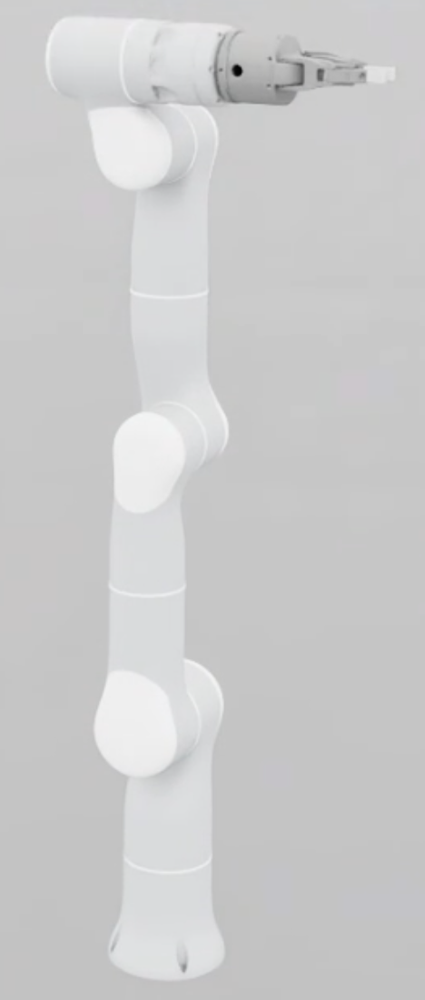
Flexiv Rizon 4s with the Grav gripper used for the DisplayPort insertion task.#
This environment has been successfully deployed and tested on a real Flexiv Rizon 4s robot without an IsaacLab dependency.
Task Details:
The DisplayPort insertion policy operates as follows:
Initial State: The policy assumes the DisplayPort plug is already grasped by the gripper at the start of the episode
Input Observations: The policy receives the current state of the robot together with the pose of the socket insertion point (position and orientation) from a separate perception pipeline. The robot state is the flange / end-effector pose
Policy Output: The policy outputs an incremental command each step: a 6-DoF Cartesian end-effector pose delta that an operational space controller tracks
Task Goal: Insert the DisplayPort plug into a fixed socket until the mate point aligns within the success threshold
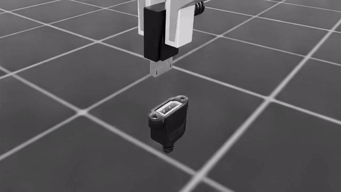
DisplayPort insertion overview#
The policy is trained in task space: it commands Cartesian end-effector pose deltas through an operational space controller. Two physics backends are provided, PhysX and Newton.
Important
Use PhysX for policies you deploy on the robot. PhysX training is more stable, and the PhysX-trained policy gives the best results in real-robot deployment. Newton training is still experimental. See Choosing a Physics Backend.
Scope of This Tutorial:
This tutorial covers training and LEAPP export in Isaac Lab. For the complete on-robot workflow (vision pipeline, robot interface, ROS inference), refer to the Isaac ROS Documentation after exporting your policy.
Code Layout:
The task is packaged under the standalone isaaclab_training namespace:
src/isaaclab_training/tasks/displayport_insertion/displayport_insertion_env_cfg.py— shared task MDP (scene, assets, observations, rewards)src/isaaclab_training/tasks/displayport_insertion/insertion_env.py— environment class that logs insertion success metrics during trainingsrc/isaaclab_training/tasks/displayport_insertion/config/displayport_rizon_4s/— Flexiv Rizon 4s + Grav robot-specific overrides and gym registrationssrc/isaaclab_training/tasks/displayport_insertion/config/displayport_rizon_4s/task_space_env_cfg.py— PhysX task-space (operational space control) environmentsrc/isaaclab_training/tasks/displayport_insertion/config/displayport_rizon_4s/task_space_newton_env_cfg.py— Newton point-SDF task-space environmentsrc/isaaclab_training/tasks/displayport_insertion/config/displayport_rizon_4s/task_space_newton_ros_inference_env_cfg.py— matching Newton ROS / LEAPP deployment contractsrc/isaaclab_training/mdp/— reusable observation, action, reward, event, noise, and termination helperssrc/isaaclab_training/cli/play_policy_io.py/uv run isaaclab-training-play-policy-io— DisplayPort-specific inference, LEAPP validation, and CSV loggingsrc/isaaclab_training/cli/export_policy.py/uv run --group leapp isaaclab-training-export— packaged LEAPP exportersrc/isaaclab_training/export/contracts.py— task-specific LEAPP I/O contracts such asdisplayport_task_space
Overview#
Successful sim-to-real transfer requires addressing three fundamental aspects:
Input Consistency: Ensuring the observations your policy receives in simulation match those available on the real robot
System Response Consistency: Ensuring the robot and environment respond to actions in simulation the same way they do in reality
Output Consistency: Ensuring any post-processing applied to policy outputs in Isaac Lab is also applied during real-world inference
When all three aspects are properly addressed, policies trained purely in simulation can achieve robust performance on real hardware without any real-world training data.
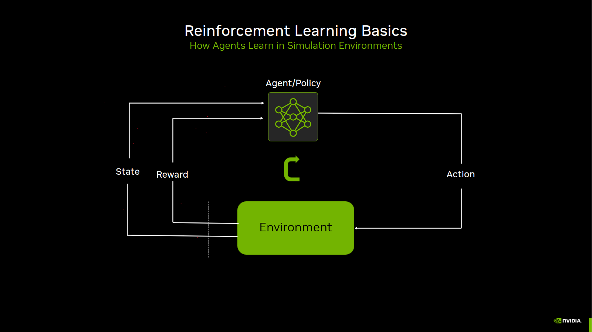
Reinforcement-learning loop used during training.#
Debugging Tip: When your policy fails on the real robot, set up the real robot with the same initial observations as in simulation, then compare how the controller responds. This isolates whether the problem is from observation mismatch (Input Consistency) or physics/controller mismatch (System Response Consistency).
Asset Quality for Insertion Tasks#
For any contact-rich insertion task, the quality of the plug and socket assets matters more than most other sim-to-real knobs. DisplayPort insertion in particular operates at very small clearances between plug blades and the socket cavity. If the USD collision geometry, mass properties, or joint behavior are wrong, no amount of reward tuning or domain randomization will produce a policy that transfers well to hardware.
The DisplayPort plug and socket assets used by these environments are published on the Isaac asset server (under Props/Factory/display_port_cable_assets) and fetched at load time rather than vendored in the repository. They have been iterated extensively and work well for training policies that transfer sim-to-real. Expect considerable upfront effort to reach this quality for a new connector or cable type.
What to validate before training:
Static insertion pose stability: Load the plug fully inserted into the socket at the goal pose (no robot, no gripper). The plug should remain seated without drifting, jittering, or being ejected by contact forces. Persistent separation or slow creep at the mated pose usually indicates incorrect collision meshes, rest offsets, or mass/inertia.
Collision fidelity at clearance scale: Blade-to-cavity gaps are sub-millimeter. Convex hulls or coarse meshes often produce false contacts, snagging, or penetration. SDF or carefully authored triangle meshes with tuned
contact_offset/rest_offsetare typically required.Engagement behavior: Push the plug through the approach path by hand (or with scripted motion) and confirm contact feels plausible — no explosive pops, no tunneling through the socket wall, no sticky high-friction jamming unless that matches the real connector.
Grasped plug stability: With the gripper closed at the training grasp width, the plug should not spin or slip unrealistically when the arm moves. Cable mass and plug COM should be representative of the real assembly.
Mate-point alignment: Verify
SOCKET_INSERTION_OFFSET,PLUG_INSERTION_OFFSET, andPLUG_GOAL_ROTindisplayport_insertion_env_cfg.pymatch the intended physical mate frame. Reward and success metrics are computed from these offsets; a mismatch here looks like a perception error on the real robot.
The robot asset matters too. The checks above concern the plug and socket, but the arm’s USD must also
represent your robot, particularly its kinematic parameters, which vary unit to unit. These environments spawn the
stock FLEXIV_RIZON4S_GRAV_GRIPPER_CFG asset, which describes a nominal
Rizon 4s rather than any particular unit. Before training a policy you intend to deploy, generate a calibrated USD
for your arm as described in
Generate a Calibrated USD for Isaac Lab Training
and pass it to training with env.scene.robot.spawn.usd_path.
Practical workflow:
Fix assets in isolation (drop-test or basic play env with fixed poses) before running full RL training.
Compare sim behavior to real hardware video at the same poses — look for drift, bounce, and penetration, not policy success rate.
Only after assets pass these checks, tune curriculum, rewards, and domain randomization.
Note
Poor asset quality often shows up as policies that learn high training success but fail on hardware with inconsistent contact behavior, or as training that never achieves high Metrics/success_rate despite reward tuning. Fix the assets first.
Part 1: Input Consistency#
The observations your policy receives must be consistent between simulation and reality. This means:
The observation space should only include information available from real sensors
Sensor noise and delays should be modeled appropriately
Using Real-Robot-Available Observations#
Your simulation environment should only use observations that are available on the real robot and not use “privileged” information that would not be available in deployment. The critic receives additional privileged observations (plug pose and joint velocities) to improve value estimation during training, but these are not passed to the actor at deployment time.
Observation Specification#
The DisplayPort insertion environment uses proprioceptive and exteroceptive (vision) observations. The actor sees the end-effector pose plus the socket insertion (mate) point supplied by perception.
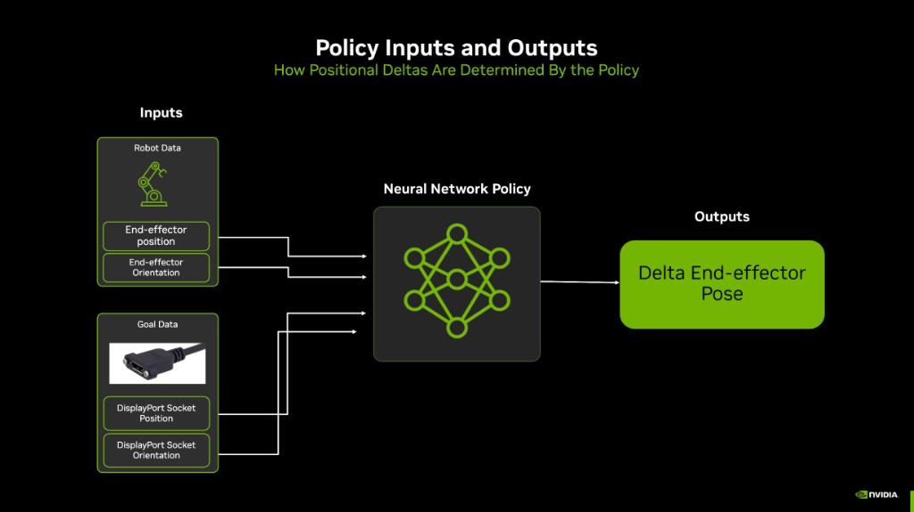
Task-space policy inputs and outputs: end-effector pose, socket pose, and a relative Cartesian command.#
Observation |
Dim |
Real-World Source |
Noise |
|---|---|---|---|
|
3 |
Robot controller |
None |
|
6 |
Robot controller |
None |
|
3 |
Perception pipeline |
None by default |
|
6 |
Perception pipeline |
None by default |
Shipping configuration (TaskSpace variants): 18 policy dimensions
(3 + 6 end-effector pose + 3 + 6 socket keypoint frame).
Orientations use a 6D rotation representation (the first two rows of the rotation matrix) rather than a quaternion. This is continuous over SO(3), which avoids the sign-flip discontinuity a quaternion introduces and is easier for the network to regress against.
The PhysX task reports the tool center point (TCP), i.e. the flange body offset along its local +Z by
_TCP_OFFSET in task_space_env_cfg.py. The Newton task preserves the validated checkpoint ABI and reports
the raw flange pose. Both exports expose the same canonical port names, but their flat checkpoint vectors
are not interchangeable; refer to Choosing a Physics Backend.
Task-space actor group (in config/displayport_rizon_4s/task_space_env_cfg.py):
@configclass
class PolicyCfg(ObsGroup):
"""Actor observations: EEF pose + socket keypoint frame (18 dims)."""
eef_pos = ObsTerm(
func=mdp.eef_pos_w,
params={"asset_cfg": SceneEntityCfg("robot"), "body_name": "flange", "offset": _TCP_OFFSET},
)
eef_rot_6d = ObsTerm(
func=mdp.eef_rot_6d_w,
params={"asset_cfg": SceneEntityCfg("robot"), "body_name": "flange"},
)
socket_kp_pos = ObsTerm(
func=mdp.rigid_object_pos_w,
params={"asset_cfg": SceneEntityCfg("dp_socket"), "offset": SOCKET_INSERTION_OFFSET},
)
socket_kp_rot_6d = ObsTerm(
func=mdp.rigid_object_rot_6d_w,
params={"asset_cfg": SceneEntityCfg("dp_socket")},
)
The critic additionally receives privileged state that the actor never sees: joint positions and velocities plus the plug keypoint frame.
Why No Noise for Proprioceptive Observations?
Policies trained without noise on proprioceptive observations transfer well to the Flexiv Rizon 4s. The controller provides sufficiently accurate joint state feedback that modeling sensor noise on joint states does not improve sim-to-real transfer for this task. The same reasoning carries over to the task-space variants: the end-effector pose is derived from those same joint encoders through forward kinematics, so it inherits their accuracy and is likewise left noise-free.
The socket pose, by contrast, comes from perception and is the observation worth corrupting. The PhysX task-space profile leaves socket observation noise disabled. The Newton task-space profile applies ±10 mm of uniform position noise, sampled once at reset and held for the episode, while its play variant disables corruption. Match this setting to the error characteristics of your deployed perception pipeline.
Part 2: System Response Consistency#
Once your observations are consistent, ensure the simulated robot and environment respond to actions the same way the real system does. For DisplayPort insertion this involves:
Physics simulation parameters (friction, contact properties, plug/socket collision meshes)
Actuator modeling (PD controller gains, effort limits)
Domain randomization and curriculum
Physics Parameter Tuning#
Accurate physics simulation is critical for contact-rich insertion. The DisplayPort plug and socket use SDF collision meshes, and the plug is a 30 g dynamic body held in the gripper while the socket is kinematic.
The plug and socket use 64 solver position iterations, set by
_PLUG_SOCKET_SOLVER_POSITION_ITERATIONS in task_space_env_cfg.py, with tight contact offsets
from displayport_insertion_env_cfg.py:
# Plug (dynamic)
rigid_props=sim_utils.RigidBodyPropertiesCfg(
solver_position_iteration_count=64, # socket also uses 64
solver_velocity_iteration_count=1,
max_depenetration_velocity=0.5, # socket uses 5.0
),
collision_props=sim_utils.CollisionPropertiesCfg(
contact_offset=0.00001, # socket: 0.0001
rest_offset=-0.00005, # socket: -0.0001
),
The Flexiv Rizon 4s arm uses lower solver iteration counts for performance:
# From config/displayport_rizon_4s/task_space_env_cfg.py
rigid_props=sim_utils.RigidBodyPropertiesCfg(
disable_gravity=True,
max_depenetration_velocity=5.0,
solver_position_iteration_count=4,
solver_velocity_iteration_count=1,
max_contact_impulse=1e32,
),
collision_props=sim_utils.CollisionPropertiesCfg(
contact_offset=0.005,
rest_offset=0.0,
),
The simulation runs at sim.dt = 1/240 s. PhysX GPU contact buffers scale automatically with
--num_envs.
Friction (startup events in task_space_env_cfg.py): plug and socket 0.001, gripper fingers
0.75. Low plug/socket friction reduces sticking during blade engagement; finger friction matches real grasp
behavior.
Warning
Newton training is experimental. PhysX training is more stable, and we recommend the PhysX-trained policy for the best results in real-robot deployment.
The Newton profile in task_space_newton_env_cfg.py uses MJWarp with Newton’s collision pipeline and
point-SDF contacts:
Setting |
Value |
|---|---|
Solver |
MJWarp |
Simulation rates |
100 Hz outer step with 20 substeps (2 kHz solver); collision every 10 substeps (200 Hz) |
Contacts |
Point-SDF on the plug and socket meshes with a 5 mm contact gap |
Contact buffers |
Per-world |
Gravity |
Robot gravity canceled with |
Friction: plug 3.0 and gripper fingers 1.0. Newton combines contact friction differently from
PhysX, so these values are not interchangeable with the PhysX profile.
Newton requires point-SDF meshes for every collider and fails at startup if one is missing.
Actuator Modeling#
In both backends the seven arm joints have zero joint-position gains, so all commanded compliance comes from the
operational space controller (OSC). The Grav gripper uses implicit actuators: a drive group on finger_joint and
a passive group on the knuckle and outer-finger joints.
The arm keeps the ImplicitActuatorCfg groups of FLEXIV_RIZON4S_GRAV_GRIPPER_CFG with stiffness and
damping set to zero. The gripper actuators are:
self.scene.robot.actuators["gripper_drive"] = ImplicitActuatorCfg(
joint_names_expr=["finger_joint"],
effort_limit_sim=2.0,
velocity_limit_sim=1.0,
stiffness=2e3,
damping=1e1,
)
self.scene.robot.actuators["gripper_passive"] = ImplicitActuatorCfg(
joint_names_expr=[".*_knuckle_joint", ".*_outer_finger_joint"],
effort_limit_sim=1.0,
velocity_limit_sim=1.0,
stiffness=0.0,
damping=0.0,
)
Warning
Newton training is experimental. PhysX training is more stable, and we recommend the PhysX-trained policy for the best results in real-robot deployment.
The arm uses zero-gain IdealPDActuatorCfg groups, so OSC remains the torque source. Newton enforces the
actuator effort limit, and joint_velocity_limit requests a solver-side clamp. Arm joint friction is
randomized by adding a value from 0 to 0.15.
The gripper drive and passive groups use effort limits of 200 and 20 N*m, velocity limits of 2 and
1 rad/s, stiffness 2000, and damping 10.
Note
Flexiv Rizon 4s: Arm PD-gain randomization is disabled for torque-level OSC.
Action Space Design#
The policy commands only the arm; the gripper is not in the action space — the plug is held at a fixed grasp width for the episode. The action is always an incremental (delta) command, never an absolute target.
The policy emits a 6-DoF Cartesian pose delta [dx, dy, dz, dθx, dθy, dθz] (metres, then radians), which an
OSC converts into joint efforts. This removes joint-level system identification from the sim-to-real path: the same
policy can drive the real robot through a task-space bridge. The action is applied at the flange.
_ACTION_SCALE = 0.025 # 25 mm and 0.025 rad per step
_STIFFNESS = (300.0, 300.0, 300.0, 30.0, 30.0, 30.0)
self.actions.arm_action = mdp.DeployOperationalSpaceControllerActionCfg(
asset_name="robot",
joint_names=_ARM_JOINTS,
body_name="flange",
controller_cfg=OperationalSpaceControllerCfg(
target_types=["pose_rel"],
motion_stiffness_task=_STIFFNESS,
...
),
position_scale=_ACTION_SCALE,
orientation_scale=_ACTION_SCALE,
)
Observes the TCP (flange offset along +Z by
_TCP_OFFSET) but acts at the flange, so the real-robot bridge must reproduce that frame split.Policy rate:
sim.dt = 1/240s withdecimation = 8(30 Hz).
Warning
Newton training is experimental. PhysX training is more stable, and we recommend the PhysX-trained policy for the best results in real-robot deployment.
OSC stiffness
(300, 300, 300, 30, 30, 30)with damping ratio1and full inertial-dynamics decoupling.Action scale: translation
[0.025, 0.025, 0.010]m, rotation0.025rad.Observes and acts at the raw flange.
Policy rate: 100 Hz outer step with
decimation = 3(33.3 Hz).
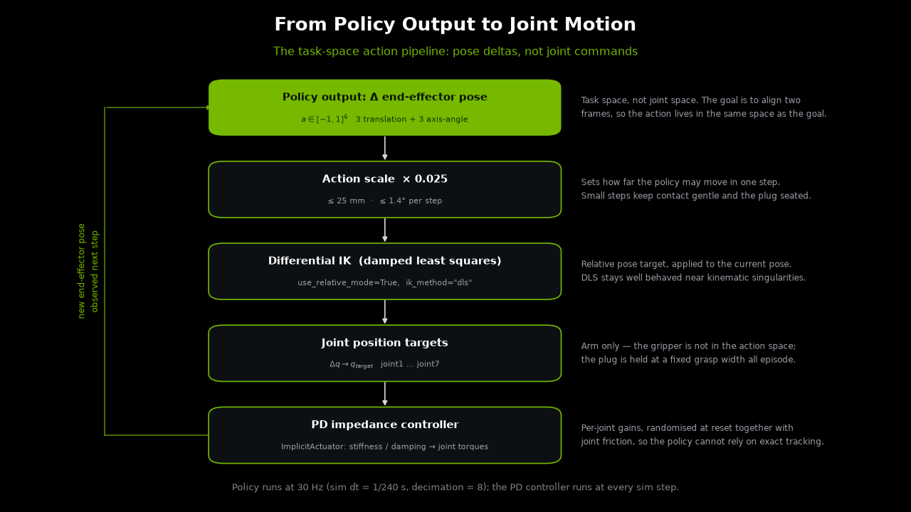
Task-space action pipeline: scaled pose delta, task-space controller, joint targets, and robot response.#
Domain Randomization Strategy#
Socket pose randomization perturbs the fixed socket to cover perception and mounting variation:
randomize_socket_pose = EventTerm(
func=mdp.reset_root_state_uniform,
mode="reset",
params={
"pose_range": {
"x": [-0.01, 0.01], # ±1 cm
"y": [-0.01, 0.01], # ±1 cm
"z": [-0.02, 0.02], # ±2 cm
"roll": [-math.radians(2.0), math.radians(2.0)],
"pitch": [-math.radians(2.0), math.radians(2.0)],
"yaw": [-math.radians(2.0), math.radians(2.0)],
},
"asset_cfg": SceneEntityCfg("dp_socket"),
},
)
Plug reset curriculum starts episodes with the plug near the goal pose and anneals toward farther approach poses:
reset_plug_curriculum = EventTerm(
func=mdp.reset_plug_at_goal_curriculum,
mode="reset",
params={
"at_goal_prob": 0.8,
"at_goal_prob_final": 0.0,
"anneal_start_iter": 0.0,
"anneal_end_iter": 333.0, # PhysX; Newton uses 500.0
"num_steps_per_env": 128,
"insertion_axis": [1.0, 0.0, 0.0],
"at_goal_depth_range": [0.0, 0.01316], # seat to 15 mm from goal keypoint
"at_goal_seat_offset": [0.00184, 0.0, -0.0006],
"approach_depth_range": [0.02, 0.06], # 20–60 mm approach
"normal_pose_range": {
"x": [-0.02, 0.02],
"y": [-0.02, 0.02],
"z": [0.0, 0.0],
},
},
)
At the start of training, 80% of resets place the plug between the physical seat and the partially inserted pose. The socket-frame seat offset prevents those resets from starting inside the collision geometry while leaving the reward and observation keypoint unchanged. The probability anneals to 0% over the first third of training, which forces the policy to learn full approach and insertion.
The schedule counts training iterations (environment steps per environment divided by num_steps_per_env), not
total samples, so it does not change with the number of environments or GPUs. The defaults cover the first third of
each backend’s default iterations: 333 of 1,000 for PhysX and 500 of 1,500 for Newton. When you change
--max_iterations, keep anneal_end_iter at one third of it; Training Time and Recommended Settings
lists the values.
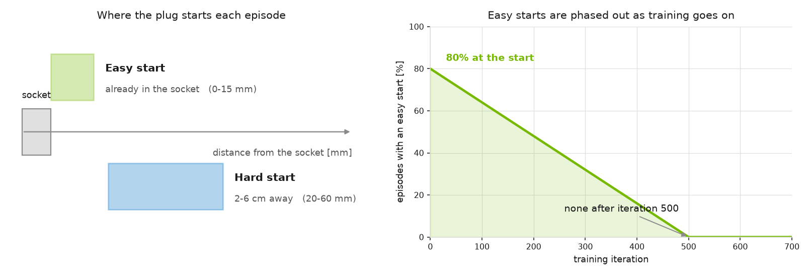
Reset curriculum: early episodes often begin near insertion, then anneal toward full approach starts.#
Initial robot pose is set via inverse kinematics to a grasp pose on the plug at each reset.
grasp_offset / end_effector_body_name / num_arm_joints are applied in
Rizon4sTaskSpaceDisplayportInsertionEnvCfg.__post_init__:
set_robot_to_grasp_pose = EventTerm(
func=mdp.set_robot_to_object_grasp_pose,
mode="reset",
params={
"target_object_name": "dp_plug",
"grasp_offset": [0.0025, 0.0, -0.1875], # plug local frame [m]
"end_effector_body_name": "flange",
"num_arm_joints": 7,
},
)
Reward Shaping#
The environment uses keypoint-based rewards that measure alignment between the plug and socket insertion mate points. Reward terms are defined in displayport_insertion_env_cfg.py:
Keypoint tracking (
plug_socket_keypoint_tracking): Penalizes L2 keypoint distance between plug and socket mate framesExponential keypoint tracking (
plug_socket_keypoint_tracking_exp): Dense exponential reward for fine alignmentAction rate (
action_rate_l2): Penalizes large action changes for smooth motions
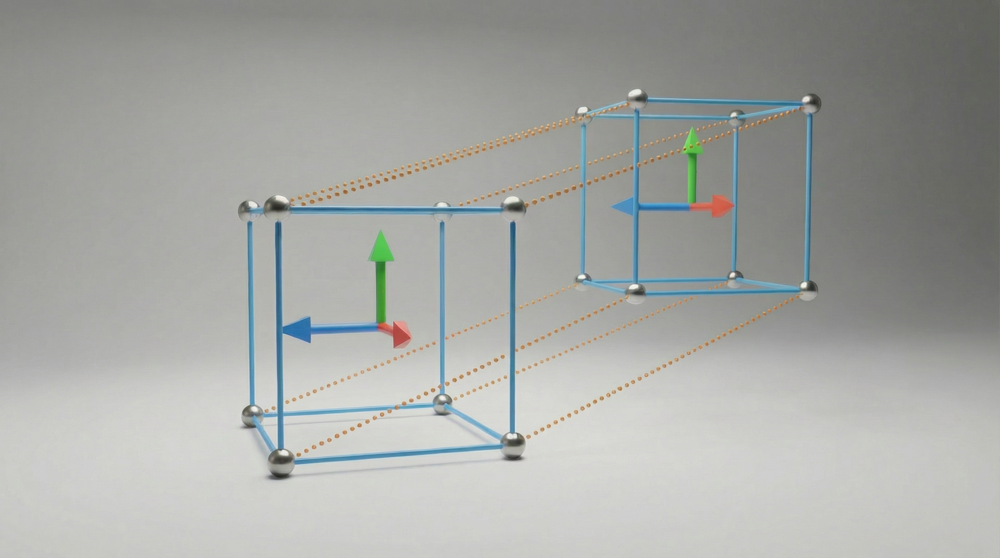
Keypoint-pair reward intuition. Corresponding plug/socket keypoints collapse only when position and orientation agree.#
The Rizon 4s config sets the linear and exponential keypoint reward weights to a 1:1 ratio:
self.rewards.plug_socket_keypoint_tracking_exp.weight = abs(
self.rewards.plug_socket_keypoint_tracking.weight
)
Terminations#
In addition to the episode timeout, the Rizon 4s config terminates early when:
Plug dropped: End-effector moves more than 15 cm away from the plug grasp point
Plug orientation exceeded: Roll or pitch deviation exceeds 15° relative to the grasp frame
Training Metrics#
This task uses a custom environment class (DisplayportInsertionEnv) to log insertion metrics to TensorBoard without changing the MDP:
Metrics/success_rate— fraction of environments within the 3 mm mate-point thresholdMetrics/plug_socket_pos_error_m— mean mate-point distanceMetrics/plug_socket_keypoint_dist_m— mean keypoint distanceMetrics/terminal_success_rate— success rate at episode reset
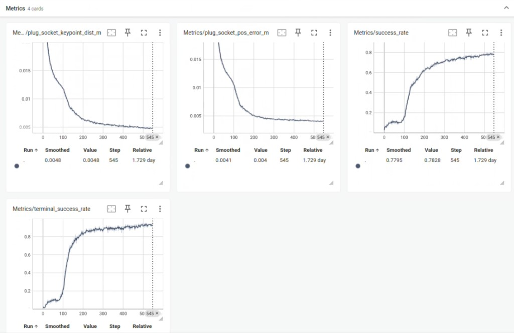
Task-level TensorBoard metrics: success rate, terminal success rate, mate-point distance, and keypoint distance.#
Tuning Hyperparameters for Better Performance#
After asset quality and physics look correct, the following hyperparameters are the main levers for improving training speed, final success rate, and sim-to-real robustness. Defaults below are the shipped Flexiv Rizon 4s values; adjust one group at a time and monitor Metrics/terminal_success_rate in TensorBoard.
Reward Weights#
Defined in displayport_insertion_env_cfg.py; the Rizon 4s config overrides the exponential weight in task_space_env_cfg.py.
Parameter |
Default |
Effect |
|---|---|---|
|
|
Linear penalty on keypoint distance. More negative → stronger pull toward alignment. |
|
|
Exponential bonus near the goal. Increase relative to linear for sharper fine-insertion behavior; decrease if policy is brittle or stalls short of full insertion. |
|
|
Per-keypoint exponential scales. Higher first values tighten the reward basin around the goal. |
|
|
Spatial extent of keypoint offsets. Affects how rotation errors contribute relative to translation. |
|
|
Smoothness penalty. More negative → slower, smoother motions; too strong can prevent final insertion force. |
1:1 linear-to-exponential weighting (current shipping default):
self.rewards.plug_socket_keypoint_tracking_exp.weight = abs(
self.rewards.plug_socket_keypoint_tracking.weight
)
If the policy approaches but does not fully seat the plug, try increasing the exponential weight or tightening kp_exp_coeffs. If it rushes and bounces off the socket, increase action_rate magnitude or reduce the exponential weight.
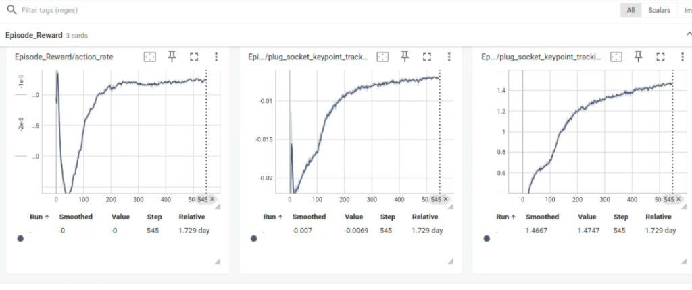
Reward terms over training for the DisplayPort policy.#
Task-Space Reset Curriculum#
Defined in config/displayport_rizon_4s/task_space_env_cfg.py → reset_plug_curriculum.
Parameter |
Default |
Effect |
|---|---|---|
|
|
Fraction of resets with plug near full insertion. Higher start values make early learning easier; anneal to zero for full approach behavior. |
|
PhysX: |
Training iterations over which at-goal probability anneals. Keep it at one third of |
|
|
How far the plug starts from the seat along the insertion axis. Together with the seat offset, this covers 1.84–15 mm from the reward keypoint without spawning below the physical seat. |
|
|
Socket-frame displacement from the reward keypoint to the measured physical seat. Revalidate this value if the plug or socket geometry changes. |
|
|
Standoff distance when not at goal (20–60 mm). Increase upper bound for harder long-range approach; decrease if the policy struggles to reach the socket mouth. |
|
±2 cm lateral |
Lateral misalignment when not at goal. Widen for more robustness to perception error; narrow if training fails to converge. |
If Metrics/success_rate is high early but collapses as the curriculum ends, compare runs at equal accumulated transitions before extending anneal_end_iter or raising at_goal_prob_final.
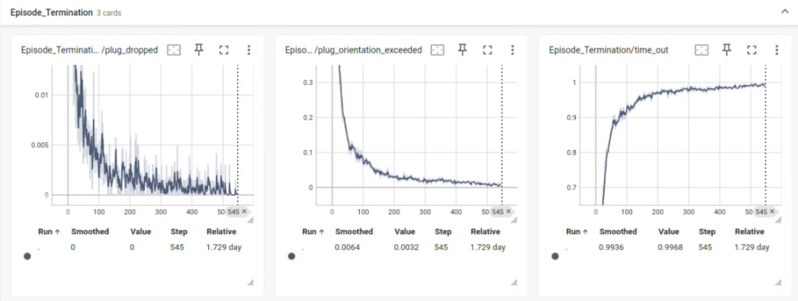
Episode termination causes over training.#
Domain Randomization and Observations#
Parameter |
Default |
Effect |
|---|---|---|
|
±1 cm XY, ±2 cm Z, ±2° |
Socket pose DR. Widen to match real perception/mount error; narrow if the policy cannot learn a baseline insertion. |
Socket position observation noise |
PhysX: off; Newton: ±10 mm, sampled once per episode |
Perception noise on the mate point. Enable or increase it to match your real pose-estimation error; decrease if the sim policy becomes too conservative. |
Plug/socket friction (startup) |
PhysX: |
Low PhysX friction reduces unrealistic jamming. Tune only after visual sim-vs-real comparison — wrong friction can dominate insertion feel. |
Gripper finger friction |
PhysX: |
Affects grasp stability during insertion forces. |
Actions and Grasp#
Parameter |
Default |
Effect |
|---|---|---|
|
|
Max end-effector delta per step (25 mm and 0.025 rad for PhysX). Increase if real robot stiction prevents reaching targets; decrease for finer final alignment. |
|
|
EE-to-plug transform for IK reset. Wrong values cause dropped-plug terminations or misaligned approach. |
|
PhysX: |
Grav finger_joint grasp command. Adjust if plug slips or is over-compressed during insertion. |
Terminations and Success Metrics#
Parameter |
Default |
Effect |
|---|---|---|
|
|
Mate-point distance counted as success in |
|
|
Early reset if EE leaves plug. Tighten to discourage release; loosen if false positives during large motions. |
Orientation thresholds (roll/pitch) |
|
Reset if plug tilts excessively relative to grasp frame. |
RL Algorithm (PPO)#
Defined in config/displayport_rizon_4s/agents/rsl_rl_ppo_cfg.py.
Parameter |
Default |
Effect |
|---|---|---|
|
PhysX: |
Total training iterations: 1,500 for up to 1,024 environments in total and 1,000 for 4,096 or more (see Training Time and Recommended Settings). Extend if success rate is still climbing at the end. |
|
|
Rollout length per iteration. Affects curriculum annealing rate (tied to |
|
|
Minibatches per PPO update. Scale it with the number of environments to keep the minibatch size constant; see Training Time and Recommended Settings. |
|
PhysX: |
Parallel environments per GPU when |
|
|
PPO learning rate. Reduce if training is unstable; increase if learning is very slow. |
|
|
Target KL for adaptive LR schedule. |
|
|
Exploration noise. Override with |
Suggested tuning order: (1) confirm asset/physics quality, (2) curriculum depth and anneal schedule, (3) linear vs exponential reward balance, (4) socket pose DR and observation noise, (5) action scale, (6) PPO training length.
Part 3: Training the Policy in Isaac Lab#
Run every command in this part from the isaaclab_training directory set up in Setup.
Registered Gym Environments#
Train on the -ROS-Inference ids. They are the environments used to produce the policies deployed on
hardware: in addition to the plain training configuration, they declare the observation/action metadata Isaac ROS
Manipulation and LEAPP consume (obs_order, policy_action_space, observation_space, action_space,
action_scale) and pin the plug, socket and seed joint pose to the real deployment station. Training on them
means the environment you trained in and the contract you export are the same thing, so a checkpoint can be
exported and deployed with Isaac ROS without swapping configurations.
Environment ID |
Purpose |
|---|---|
|
PhysX training and deployment — recommended. Carries the ROS / LEAPP export contract. |
|
PhysX training without deployment metadata (ablations, experiments) |
|
Experimental. Newton training and deployment. Carries the ROS / LEAPP export contract. |
|
Experimental. Newton training without deployment metadata (ablations, experiments) |
The plain training ids remain useful when you are experimenting and do not intend to deploy that particular
checkpoint — for example when sweeping rewards or randomization. If you later want to ship such a checkpoint, export
it against the matching -ROS-Inference id so the traced layout matches deployment.
Pass the same task id used for training to the play command; the play entrypoint applies the configuration’s
play_mode() overrides automatically, including the smaller environment count and disabled observation
corruption.
Choosing a Physics Backend#
Both backends train the same task-space policy with the same algorithm, reward, and curriculum. Pick the backend once and use its task id for training, play, and export.
Recommended. PhysX training is more stable, and the PhysX-trained policy gives the best results in real-robot deployment.
Training id:
IsaacTraining-DisplayPortInsertion-Rizon4s-TaskSpace-ROS-InferencePolicy rate: 30 Hz
Actor observation: 18 dims, TCP pose followed by the socket keypoint frame
Default: 4,096 environments for 1,000 iterations of 128 steps
Warning
Newton training is experimental. PhysX training is more stable, and we recommend the PhysX-trained policy for the best results in real-robot deployment.
Training id:
IsaacTraining-DisplayPortInsertion-Rizon4s-TaskSpace-Newton-ROS-Inference, together with thephysics=newton_sdfoverridePolicy rate: 33.3 Hz
Actor observation: 18 dims, socket position first, then the raw flange pose and the socket rotation
Default: 256 environments per GPU for 1,500 iterations of 128 steps, with seed
123
Newton requires a valid flange inertia. The stock nominal USD’s flange is a mass-only marker, so before
Newton imports the scene the task authors a uniform-sphere inertia (density 1000 kg/m^3) for it. A valid
inertia in a calibrated USD is kept. Invalid mass or principal axes, a missing flange, or missing point-SDF
collision meshes fail before training.
Important
Newton and PhysX checkpoints are not interchangeable. Both actors take 18 values, but in a different order and with a different end-effector frame, so using the wrong task id can load successfully while silently feeding every field at the wrong offset. Always train, play, and export with task ids from the same backend. LEAPP bundles record the policy ABI, backend, observed and action frames, and action scale so deployment tooling can reject a mismatched contract.
The task-space environments use the LEAPP-exportable
DeployOperationalSpaceControllerActionCfg action, so a trained checkpoint
can be exported directly (see Exporting a Task-Space Policy).
Adapting the Task to Your Setup#
The defaults describe the reference station used to train the released policy. If you plan to deploy on your own robot cell, review these settings before training:
Setting |
Where |
Why it matters |
|---|---|---|
Robot USD |
|
The stock asset describes a nominal Rizon 4s, not your unit. |
Socket pose during training |
|
Center of the socket insertion point in the robot base frame. Set it near your real socket so training covers the arm configurations you deploy in. |
Socket pose in the deployment environments |
PhysX: |
Fixed socket pose of the |
Socket pose randomization |
|
Should cover the variation between your nominal and real socket placement. |
Robot seed joint pose |
|
The reset IK starts from this pose to place the gripper on the plug. Use a pose close to the arm configuration above your socket so the IK converges to a similar, reachable solution. |
Socket position observation noise |
|
Off for PhysX by default. Enable it to match the error of your socket pose estimate. |
Training Time and Recommended Settings#
Each training iteration collects 128 steps from every environment. Choose the iteration count from the total number of environments (GPUs × environments per GPU):
Up to 1,024 environments in total, for example 4 GPUs × 256 or 1 GPU × 1,024: 1,500 iterations.
4,096 or more environments in total: 1,000 iterations. Extra environments add samples to each iteration, but the policy still needs about 1,000 updates, so do not reduce the iteration count further.
Set two other values to match:
env.events.reset_plug_curriculum.params.anneal_end_iter: one third of--max_iterations, that is500for 1,500 iterations and333for 1,000.agent.algorithm.num_mini_batches:16up to 4,096 environments in total. Above that, use GPUs × environments per GPU × 128 / 32,768 so each minibatch keeps 32,768 samples.
Each backend’s defaults match its default environment count: PhysX trains 4,096 environments for 1,000 iterations,
and Newton trains 256 environments per GPU for 1,500 iterations. Pass the values from the table when you change
--num_envs or the number of GPUs. Because the iteration count no longer shrinks as environments are added, more
environments or GPUs train on more samples but do not shorten the run.
Training times below are estimated from measured throughput on NVIDIA L40 (48 GB) GPUs.
GPUs × environments per GPU |
Training time |
|
|
|
|---|---|---|---|---|
4 × 256 |
~16.5 hours |
|
|
|
1 × 1,024 |
~21 hours |
|
|
|
1 × 4,096 |
~28 hours |
|
|
|
1 × 8,192 |
~51 hours |
|
|
|
4 × 4,096 |
~34 hours |
|
|
|
PhysX throughput grows little beyond 4,096 environments per GPU, and PhysX supports at most about 12,288 environments per process.
Recommendations:
Use the default 1 GPU × 4,096 environments (~28 hours).
With four GPUs, use 4 × 4,096 to train on four times the samples in about 34 hours.
1 × 8,192 fits on 48 GB GPUs such as the L40, but it takes about twice as long as 1 × 4,096.
4 × 256 and 1 × 1,024 finish sooner but train on a quarter of the samples of 1 × 4,096.
Warning
Newton training is experimental. PhysX training is more stable, and we recommend the PhysX-trained policy for the best results in real-robot deployment.
GPUs × environments per GPU |
Training time |
|
|
|
|---|---|---|---|---|
4 × 256 |
~13 hours |
|
|
|
1 × 1,024 |
~35 hours |
|
|
|
1 × 4,096 |
~3.5 days |
|
|
|
4 × 4,096 |
~3.3 days |
|
|
|
Newton throughput levels off at about 1,000 environments per GPU, at roughly 1,700–2,100 samples/s per GPU, so runs with 4,096 environments per GPU take days.
Recommendations:
Use the default 4 GPUs × 256 environments (~13 hours).
On a single GPU, use 1 × 1,024 (~35 hours).
Step 1: Visualize the Environment#
Launch training with a small number of environments and the viewer enabled to verify the setup:
uv run isaaclab train --rl_library rsl_rl \
--task IsaacTraining-DisplayPortInsertion-Rizon4s-TaskSpace-ROS-Inference \
--num_envs 16 \
--max_iterations 100 \
--viz kit
Warning
Newton training is experimental. PhysX training is more stable, and we recommend the PhysX-trained policy for the best results in real-robot deployment.
uv run isaaclab train --rl_library rsl_rl \
--task IsaacTraining-DisplayPortInsertion-Rizon4s-TaskSpace-Newton-ROS-Inference \
--num_envs 16 \
--max_iterations 100 \
--viz kit \
physics=newton_sdf
The recurrent PPO configuration uses 16 minibatches, so use at least 16 environments, or set
agent.algorithm.num_mini_batches no higher than --num_envs; otherwise empty minibatches produce invalid
optimizer statistics.
What to Expect:
In early training, the robot moves the grasped plug toward the socket but will not insert reliably yet. Verify that:
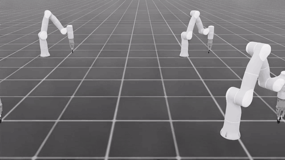
Early untrained behavior: the robot explores around the socket before the insertion behavior has been learned.#
The plug is grasped at reset and held throughout the episode
The socket pose randomization and plug curriculum produce varied starting configurations
Contact between plug blades and socket looks physically plausible
With the plug placed in the fully inserted pose (no policy), it stays seated without drift or instability
Stop training (Ctrl+C) once the environment looks correct, then proceed to full-scale training.
Trained policy replay in Isaac Lab with the reset curriculum disabled.#
Step 2: Full-Scale Training#
Launch full training headless with the recommended settings from Training Time and Recommended Settings:
Single GPU:
uv run isaaclab train --rl_library rsl_rl \
--task IsaacTraining-DisplayPortInsertion-Rizon4s-TaskSpace-ROS-Inference \
--num_envs 4096 \
--max_iterations 1000 \
--viz none
Four GPUs, with --num_envs per GPU:
uv run isaaclab train_multigpu --num_gpus 4 --rl_library rsl_rl \
--task IsaacTraining-DisplayPortInsertion-Rizon4s-TaskSpace-ROS-Inference \
--external_callback isaaclab_training.tasks.register \
--num_envs 4096 \
--max_iterations 1000 \
--viz none \
agent.algorithm.num_mini_batches=64
Warning
Newton training is experimental. PhysX training is more stable, and we recommend the PhysX-trained policy for the best results in real-robot deployment.
The default Newton recipe runs on four GPUs with 256 environments per GPU and seed 123:
uv run isaaclab train_multigpu --num_gpus 4 --rl_library rsl_rl \
--task IsaacTraining-DisplayPortInsertion-Rizon4s-TaskSpace-Newton-ROS-Inference \
--external_callback isaaclab_training.tasks.register \
--num_envs 256 \
--seed 123 \
--viz none \
physics=newton_sdf
To train for a calibrated arm, append its absolute USD override to the training command, and repeat it when you play or export the checkpoint:
env.scene.robot.spawn.usd_path=/absolute/path/to/calibrated_rizon4s.usd
Command breakdown:
--rl_library rsl_rl: Selects the RSL-RL backend.--num_envs: Parallel environments per GPU.--viz none: Disables all visualizers for throughput; pass--viz kitto open the viewer. The visualizer does not select the physics backend.train_multigpu --num_gpus N: Launches one training process per GPU and averages gradients across them.--external_callback isaaclab_training.tasks.register: Registers the DisplayPort tasks in everytrain_multigpuprocess. Single-GPUisaaclab trainregisters them automatically.Add
--video --video_length 200 --video_interval 12800to record a one-episode video every 100 iterations.
Checkpoints and videos are saved under logs/rsl_rl/.
Monitoring Training Progress with TensorBoard:
uv run python -m tensorboard.main --logdir logs/rsl_rl
Monitor Metrics/success_rate and reward curves to confirm learning. The at-goal curriculum ends at
anneal_end_iter; judge final performance after that point.
Policy learning progress (during training): These TensorBoard curves show whether the policy is improving, whether terminal success follows the dense success metric, and whether the curriculum is still producing useful learning signal.
TensorBoard success metrics from the DisplayPort training run.#
Play a Trained Policy#
Play a checkpoint with the same task id you trained on:
uv run isaaclab play --rl_library rsl_rl \
--task IsaacTraining-DisplayPortInsertion-Rizon4s-TaskSpace-ROS-Inference \
--checkpoint /absolute/path/to/model.pt \
--num_envs 1 \
--viz kit
Warning
Newton training is experimental. PhysX training is more stable, and we recommend the PhysX-trained policy for the best results in real-robot deployment.
uv run isaaclab play --rl_library rsl_rl \
--task IsaacTraining-DisplayPortInsertion-Rizon4s-TaskSpace-Newton-ROS-Inference \
--checkpoint /absolute/path/to/model.pt \
--num_envs 1 \
--viz kit \
physics=newton_sdf
For DisplayPort-specific socket overrides and policy_io.csv logging, see
Deterministic Debugging (Play / Inference Script).
Step 3: Export and Deploy on Real Robot#
Recommended workflow: export the trained policy with LEAPP, validate the export in simulation, then deploy the LEAPP package with Isaac ROS Manipulation on the Flexiv robot.

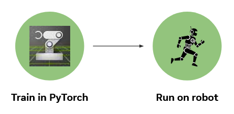
Boundary between Isaac Lab training and deployment.#
Export from the -ROS-Inference task id so the traced observation and action layout matches deployment. If
you followed the training steps above this is the same id you trained on, and no configuration swap is needed. It
is IsaacTraining-DisplayPortInsertion-Rizon4s-TaskSpace-ROS-Inference for PhysX or
IsaacTraining-DisplayPortInsertion-Rizon4s-TaskSpace-Newton-ROS-Inference for Newton (both are 18-dim but have
different internal semantics). Do not export a Newton checkpoint against the PhysX task or vice versa.
Export with LEAPP (Recommended)#
LEAPP (Lightweight Export Annotations for Policy Pipelines) is the default and recommended path from a trained checkpoint to real-robot inference. It packages the policy together with input/output semantics (observation ordering, action scaling, recurrent LSTM state) so Isaac ROS deployment does not need to reimplement Isaac Lab preprocessing by hand.
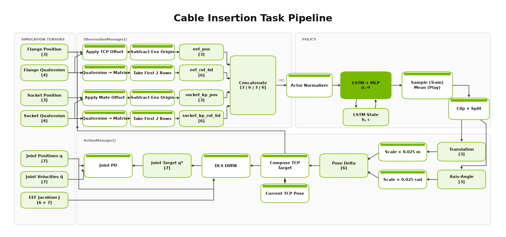
Isaac Lab policy data path through observation processing, recurrent inference, and action post-processing.#
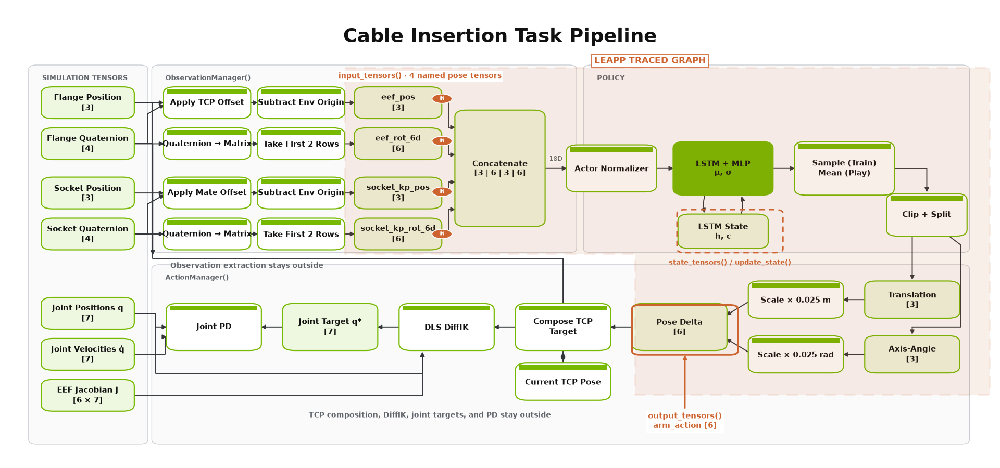
LEAPP annotations mark the deployable input/output tensors inside the Isaac Lab pipeline.#
Prerequisites: a trained checkpoint, and the leapp optional dependency. With uv it is
pulled in by the leapp dependency group, so no separate install step is needed when you use
uv run --group leapp. In a self-managed environment, install the validated
NVIDIA-hosted release explicitly; public PyPI currently resolves an older exporter
that does not preserve this task’s observation contract:
python -m pip install --extra-index-url https://pypi.nvidia.com "leapp==0.6.1"
Export the policy:
The export uses the DisplayPort task-space contract (see Exporting a Task-Space Policy):
uv run --group leapp isaaclab-training-export \
--task IsaacTraining-DisplayPortInsertion-Rizon4s-TaskSpace-ROS-Inference \
--checkpoint logs/rsl_rl/displayport_insertion_rizon4s/<run_timestamp>/model_<iteration>.pt \
--contract displayport_task_space
Warning
Newton training is experimental. PhysX training is more stable, and we recommend the PhysX-trained policy for the best results in real-robot deployment.
uv run --group leapp isaaclab-training-export \
--task IsaacTraining-DisplayPortInsertion-Rizon4s-TaskSpace-Newton-ROS-Inference \
--checkpoint logs/rsl_rl/displayport_insertion_rizon4s_newton_osc/<run_timestamp>/model_<iteration>.pt \
--contract displayport_task_space \
physics=newton_sdf
Replace <run_timestamp> and <iteration> with your training log path. For a checkpoint trained with a
calibrated USD, repeat its absolute env.scene.robot.spawn.usd_path=... override on the export command.
By default, the export writes a DisplayPortTaskSpace directory next to the checkpoint, containing:
Exported model (
.onnxby default, or.ptdepending on backend)LEAPP metadata YAML describing the policy I/O graph
Initial recurrent hidden state (
.safetensors) — this policy uses an LSTM actorPipeline graph visualization (
.png)
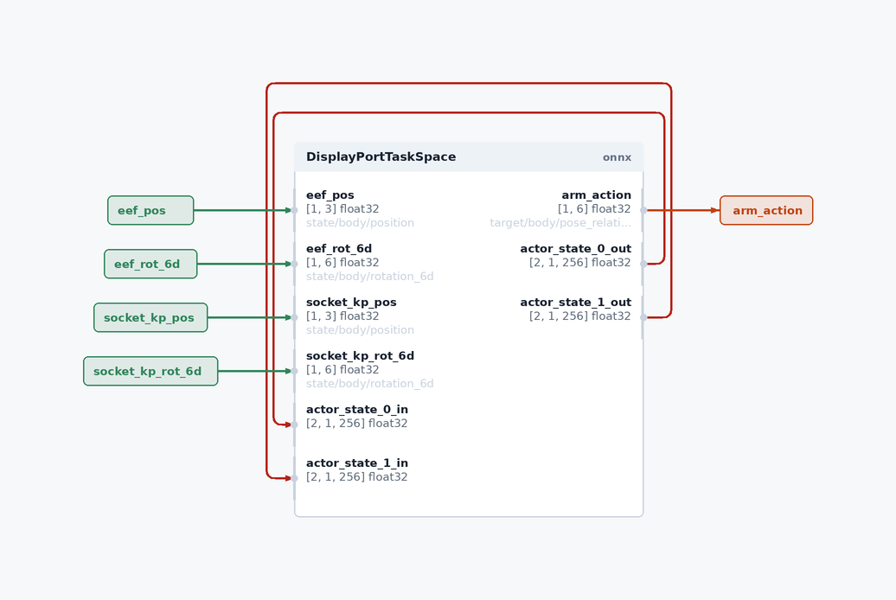
LEAPP-generated visualization of the exported policy interface and recurrent-state feedback.#
Useful export flags:
--export_method onnx-dynamo— default ONNX export backend--validation_steps 5— replay traced rollout data to verify the export (recommended; set0only for debugging)--export_save_path <dir>— write artifacts to a custom directory
See Exporting Policies with LEAPP for full CLI options, backend choices, and troubleshooting.
Validate the LEAPP export in simulation before real-robot deployment. Prefer the
DisplayPort-specific play entry point so you can fix socket poses, inject perception error,
and write policy_io.csv for sim/real overlay:
uv run isaaclab-training-play-policy-io \
--task IsaacTraining-DisplayPortInsertion-Rizon4s-TaskSpace-ROS-Inference \
--leapp_model logs/rsl_rl/displayport_insertion_rizon4s/<run_timestamp>/DisplayPortTaskSpace \
--num_envs 1 \
--socket_pos 0.476 0.127 0.07 \
--max_steps 200 \
--log_dir logs/dp_inference_runs \
--visualizer kit
Warning
Newton training is experimental. PhysX training is more stable, and we recommend the PhysX-trained policy for the best results in real-robot deployment.
uv run isaaclab-training-play-policy-io \
--task IsaacTraining-DisplayPortInsertion-Rizon4s-TaskSpace-Newton-ROS-Inference \
--leapp_model logs/rsl_rl/displayport_insertion_rizon4s_newton_osc/<run_timestamp>/DisplayPortTaskSpace \
--num_envs 1 \
--socket_pos 0.476 0.127 0.07 \
--max_steps 200 \
--log_dir logs/dp_inference_runs \
--visualizer kit \
physics=newton_sdf
Append the calibrated-USD override used for training and export, if any.
--leapp_model accepts either the LEAPP deploy YAML or the export directory that
contains it. Pose overrides and CSV logging still apply. Do not combine
--leapp_model with --checkpoint or --replay_csv.
Deploy on hardware: pass the LEAPP export directory and metadata to your Isaac ROS Manipulation workflow. Refer to DisplayPort Cable Insertion with FoundationPose, SAM, and cuMotion for on-robot setup. The on-robot pipeline typically includes:
Perception — socket pose estimation
Motion planning — approach trajectory to the insertion station (if used)
Policy inference — LEAPP-exported policy at control frequency in the ROS inference node
Robot control — Flexiv commands derived from policy actions: a Cartesian pose delta applied through the task-space bridge
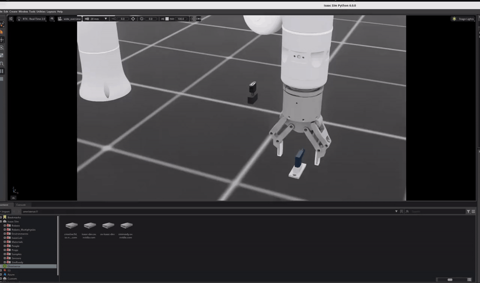
Complete Isaac Sim deployment run: pick the plug, move to hover, then hand off to the RL policy for insertion.#
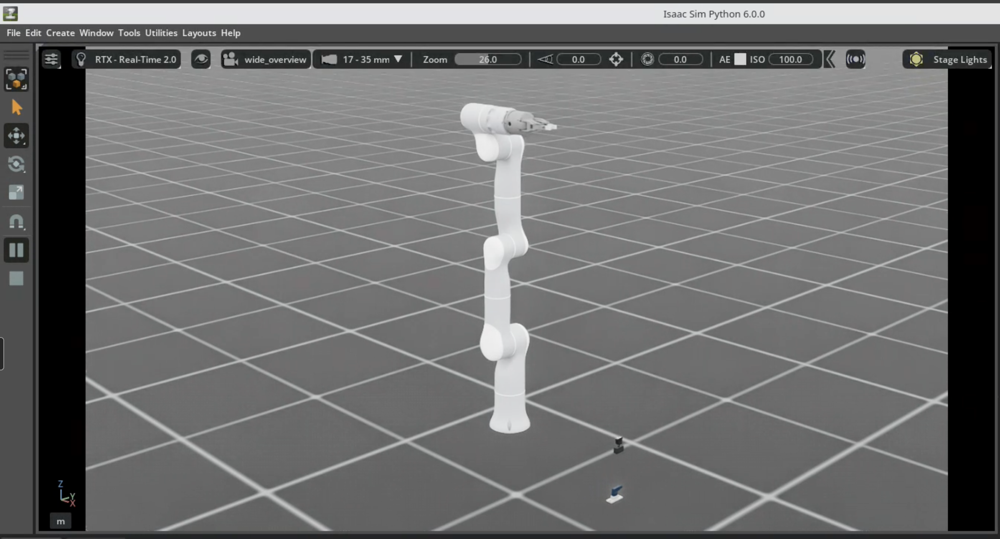
Isaac Sim deployment scene with the pickup fixture and socket.#

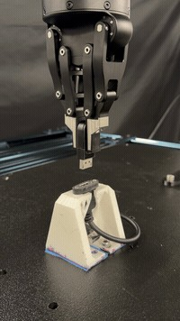
The DisplayPort plug seated on the physical Flexiv Rizon 4s setup.#
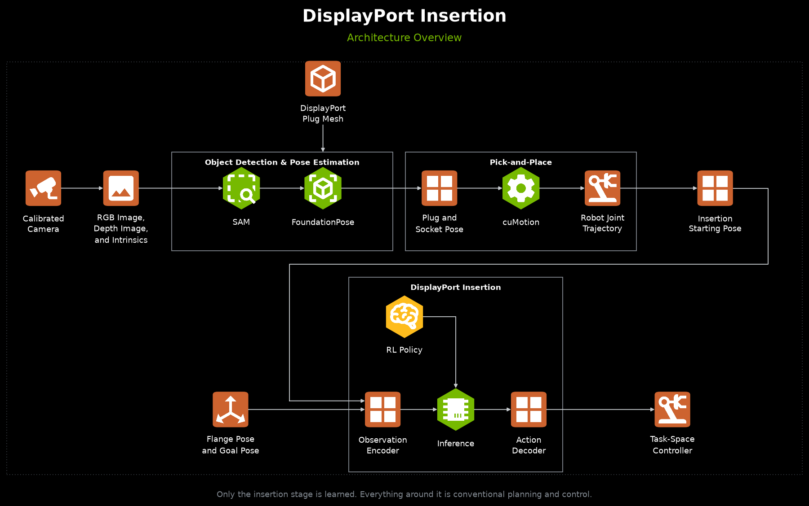
Full ROS deployment architecture: perception, motion planning, robot control, and policy inference.#
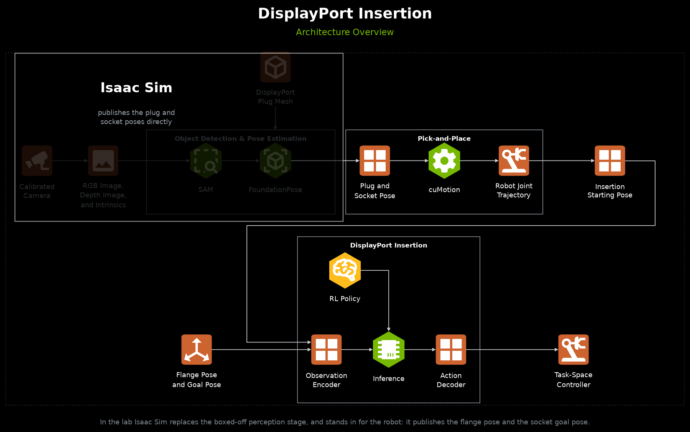
Simulation-backed deployment architecture, where Isaac Sim stands in for perception and the physical robot.#
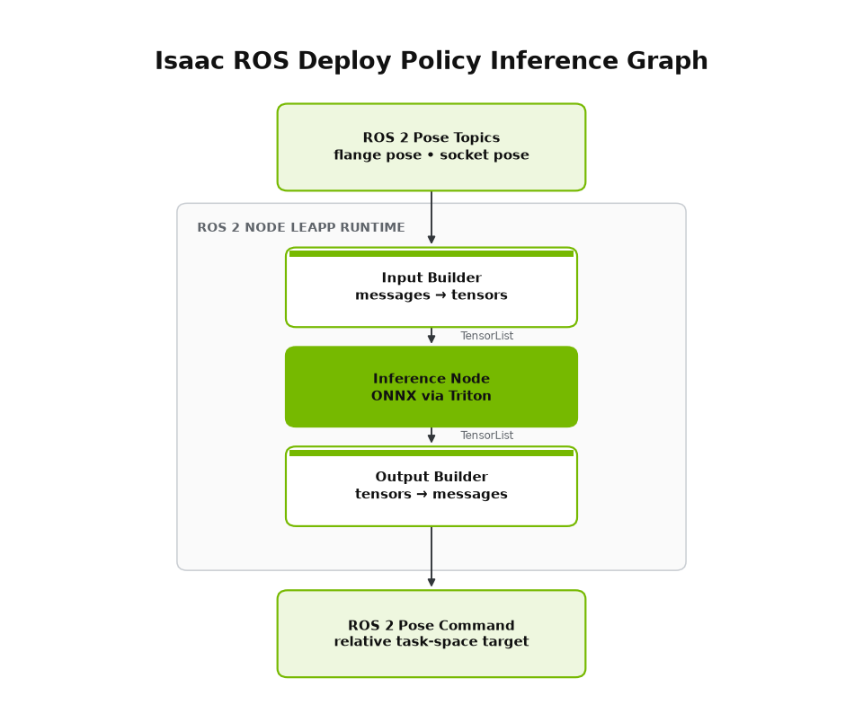
ROS 2 node deployment graph around the exported policy.#
The ROS inference environments define the deployment metadata LEAPP traces during export:
PhysX uses IsaacTraining-DisplayPortInsertion-Rizon4s-TaskSpace-ROS-Inference; Newton uses
IsaacTraining-DisplayPortInsertion-Rizon4s-TaskSpace-Newton-ROS-Inference.
obs_order:["eef_pos", "eef_rot_6d", "socket_kp_pos", "socket_kp_rot_6d"]policy_action_space:"task"(pose_rel)observation_space: 18action_space: 6PhysX
action_scale:0.025(metres for translation, radians for rotation)Newton
action_scale: translation[0.025, 0.025, 0.010]m and rotation0.025rad
Fixed deployment poses are set in task_space_ros_inference_env_cfg.py for PhysX and
task_space_newton_ros_inference_env_cfg.py for Newton. The canonical LEAPP ports are EEF-first for both;
the Newton export contract reconstructs the checkpoint’s socket-first internal actor vector.
Exporting a Task-Space Policy#
A task-space checkpoint is exported with the packaged exporter and the
displayport_task_space contract because its action is a scaled 6-DoF Cartesian pose delta rather than joint
targets. The same exporter stays task-agnostic by loading task-specific contracts from
src/isaaclab_training/export/contracts.py:
uv run --group leapp isaaclab-training-export \
--task IsaacTraining-DisplayPortInsertion-Rizon4s-TaskSpace-ROS-Inference \
--checkpoint logs/rsl_rl/displayport_insertion_rizon4s/<run_timestamp>/model_<iteration>.pt \
--export_save_path <output_dir> \
--contract displayport_task_space
Warning
Newton training is experimental. PhysX training is more stable, and we recommend the PhysX-trained policy for the best results in real-robot deployment.
uv run --group leapp isaaclab-training-export \
--task IsaacTraining-DisplayPortInsertion-Rizon4s-TaskSpace-Newton-ROS-Inference \
--checkpoint logs/rsl_rl/displayport_insertion_rizon4s_newton_osc/<run_timestamp>/model_<iteration>.pt \
--export_save_path <output_dir> \
--contract displayport_task_space \
physics=newton_sdf
The export writes a DisplayPortTaskSpace LEAPP package (.onnx graph, .yaml semantics, and
_initial_values.safetensors for the recurrent state). Its I/O contract is:
Inputs:
eef_pos(3),eef_rot_6d(6),socket_kp_pos(3),socket_kp_rot_6d(6), plus the actor LSTM state.Output:
arm_action(6) — apose_relCartesian delta[dx, dy, dz, dθx, dθy, dθz]consumed by the task-space bridge (isaaclab_connection: action:arm_action:pose_rel).
Validate it with isaaclab-training-play-policy-io and --leapp_model pointing at <output_dir>/DisplayPortTaskSpace, as
shown above, with the task id of the backend you trained on and the calibrated USD override, if any.
Alternative: Raw Checkpoint Deployment#
For development or legacy Isaac ROS Manipulation setups, you can deploy the RSL-RL checkpoint directly without a LEAPP export step. This path uses the .pt checkpoint with agent.yaml and env.yaml from:
logs/rsl_rl/displayport_insertion_rizon4s/<run_timestamp>/model_<iteration>.pt
This is not recommended for shipping — you must manually ensure observation ordering, action scaling, and LSTM state handling match training. Prefer the LEAPP export path above for production deployment.
Troubleshooting#
PhysX Collision Stack Overflow#
Error Message:
PhysX error: PxGpuDynamicsMemoryConfig::collisionStackSize buffer overflow detected
Cause: GPU collision buffers are too small for contact-rich plug/socket interaction across many parallel environments.
Solution: The PhysX GPU buffers scale with --num_envs: physx_collision_stack_bytes_per_1024_envs
(default 256 MB per 1,024 environments), physx_rigid_patches_per_env (32), and
physx_rigid_contacts_per_env (160) in displayport_insertion_env_cfg.py. If an overflow persists, increase
the matching value, for example as a Hydra override:
env.physx_collision_stack_bytes_per_1024_envs=536870912
CUDA Out of Memory#
Solutions (in order of preference):
Reduce parallel environments:
uv run isaaclab train --rl_library rsl_rl \ --task <TASK_ID> \ --num_envs 128 \ --viz none
Reduce
_PLUG_SOCKET_SOLVER_POSITION_ITERATIONSintask_space_env_cfg.py(trade-off: more penetration)Disable video recording during training
Deterministic Debugging (Play / Inference Script)#
For DisplayPort insertion, prefer the dedicated play entry point over the generic
uv run isaaclab play path. It keeps DP-specific pose overrides, perception-error
injection, and policy_io.csv logging out of the shared play entrypoint.
The examples below use the PhysX task-space ROS-inference task. For a Newton policy, use
IsaacTraining-DisplayPortInsertion-Rizon4s-TaskSpace-Newton-ROS-Inference and append physics=newton_sdf.
RSL-RL checkpoint (recommended shipping task):
uv run isaaclab-training-play-policy-io \
--task IsaacTraining-DisplayPortInsertion-Rizon4s-TaskSpace-ROS-Inference \
--checkpoint logs/rsl_rl/displayport_insertion_rizon4s/<run>/model_<iteration>.pt \
--num_envs 1 \
--socket_pos 0.476 0.127 0.07 \
--observed_socket_pos 0.486 0.127 0.07 \
--max_steps 200 \
--log_dir logs/dp_inference_runs \
--visualizer kit
Exact first observation from real/sim CSV (closed-loop; injects obs_* from the
chosen row as the first policy input, then continues with live sim observations):
uv run isaaclab-training-play-policy-io \
--task IsaacTraining-DisplayPortInsertion-Rizon4s-TaskSpace-ROS-Inference \
--checkpoint logs/rsl_rl/displayport_insertion_rizon4s/<run>/model_<iteration>.pt \
--init_obs_csv rollouts/sim_real_compare/real_policy_gt_sock.csv \
--socket_pos 0.475 0.125 0.07 \
--num_envs 1 \
--max_steps 200 \
--log_dir logs/dp_init_obs_runs \
--visualizer kit
Unset --robot_joint_pos / --observed_socket_* are seeded from that CSV row so the
scene starts aligned. Use --init_obs_step N to pick a non-zero row. Works with
--leapp_model as well; not compatible with --replay_csv.
LEAPP-exported ONNX policy (same script; see Step 3 above for --leapp_model).
Open-loop replay of a logged policy_io.csv / real rollout:
uv run isaaclab-training-play-policy-io \
--task IsaacTraining-DisplayPortInsertion-Rizon4s-TaskSpace-ROS-Inference \
--replay_csv rollouts/sim_real_compare/real_policy.csv \
--socket_pos 0.475 0.125 0.07 \
--log_dir rollouts/sim_real_compare/replay_run \
--visualizer kit
Pose conventions:
--socket_pos/--observed_socket_posare socket insertion-geometry world positions (mate point), matchingfixed_asset_init_pos_center, not the USD root. The USD root is derived viacompute_socket_root.Quaternions are
(x, y, z, w).If
--observed_socket_*is omitted, the policy observes the true simulated socket pose.Telemetry is written to
policy_io.csv(+run_config.json) under--log_diror<checkpoint_dir>/inference_logs/<timestamp>/.
Generic play (no DP pose / CSV knobs) still works for a quick smoke test:
uv run isaaclab play --rl_library rsl_rl \
--task IsaacTraining-DisplayPortInsertion-Rizon4s-TaskSpace-ROS-Inference \
--num_envs 1 \
--checkpoint <path_to_model.pt>
To match a specific real-world station layout, edit the workspace constants. The PhysX task-space training layout
is defined in config/displayport_rizon_4s/joint_pos_env_cfg.py and imported by task_space_env_cfg.py; the
deployment layout is defined in config/displayport_rizon_4s/task_space_ros_inference_env_cfg.py:
# Training station layout (joint_pos_env_cfg.py, imported by task_space_env_cfg.py)
_GEOMETRY_POS = (0.475, 0.125, 0.06)
_SOCKET_ROT = (0.5, 0.5, 0.5, -0.5)
# Deployment layout (task_space_ros_inference_env_cfg.py)
_HUBBLE_GEOMETRY_POS = (0.475, 0.125, 0.06)
_HUBBLE_SOCKET_ROT = (0.5, 0.5, 0.5, -0.5)
This workflow is useful for:
Comparing simulated and real-world policy behavior at a known socket pose
Validating LEAPP exports before hardware deployment
Verifying plug grasp and approach trajectories before full perception integration
Debugging insertion failures at a fixed station configuration